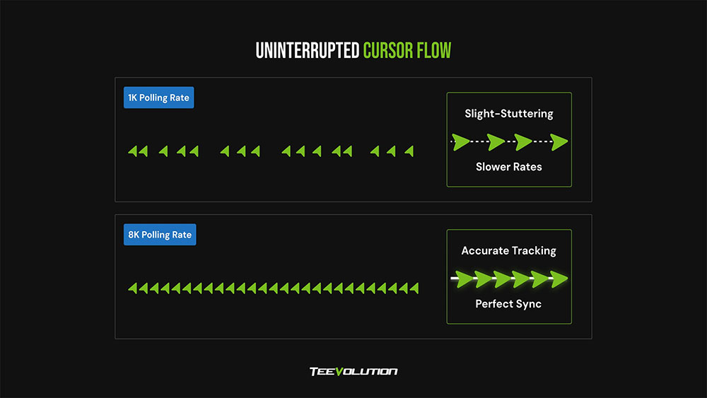
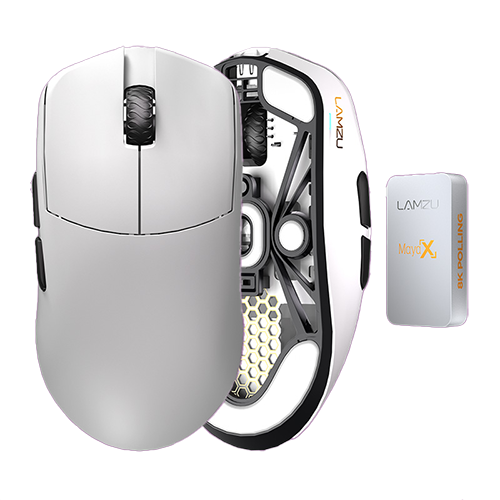
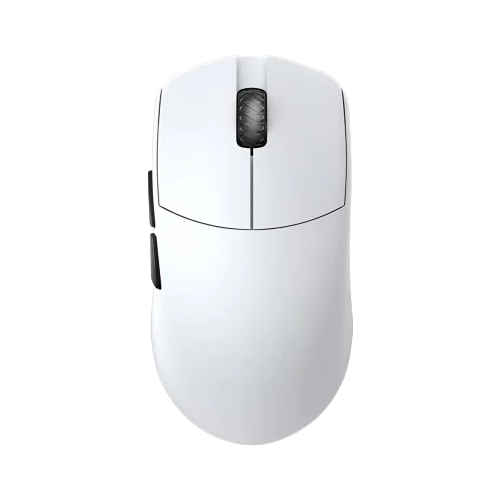
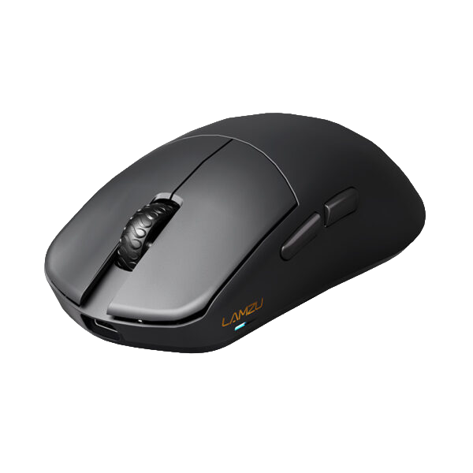
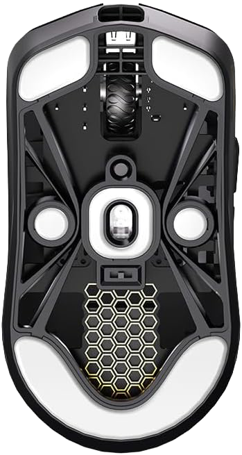
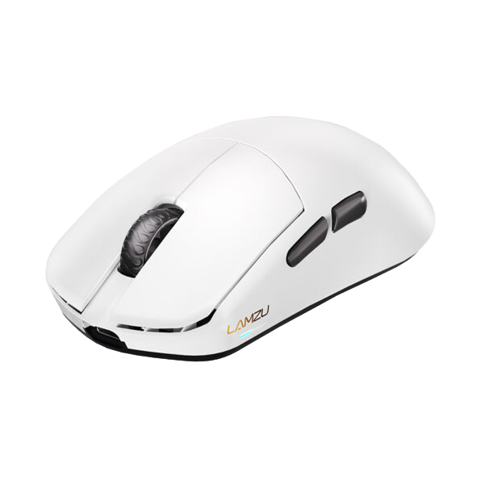
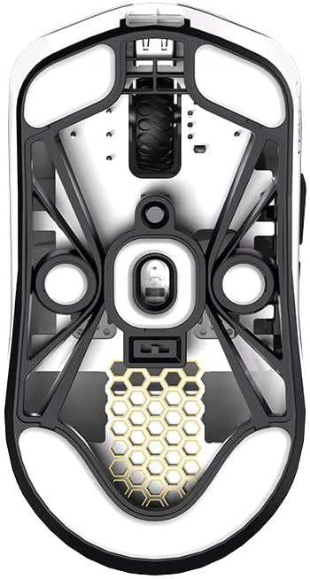
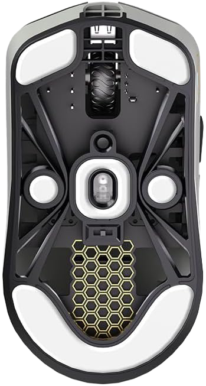
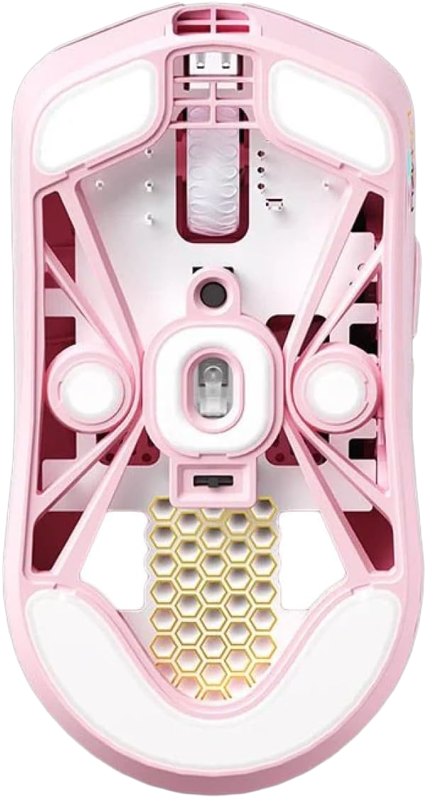
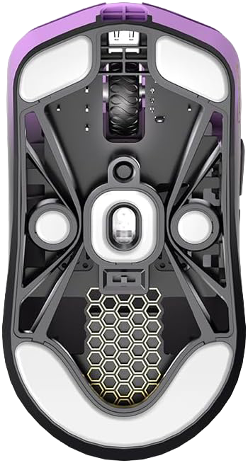

1k vs 8k pollingrate

1k pollingrateは1000Hz、8k pollingrateは8000Hzのことを指します。 これらの数値は、マウスがPCに対してどれだけ頻繁に位置情報を送信するかを示しています。 1k pollingrateは1秒間に1000回、8k pollingrateは1秒間に8000回位置情報を送信します 。一般的に、8k pollingrateの方がより高精度で滑らかな動きを提供するとされていますが、 実際の使用感には個人差があります。
MayaXの形状・重量

Lamzu MayaX

Lamzu Maya
左右対称でつまみ/掴み/かぶせ持ちに対応可能なユニバーサルシェイプを採用し安定した操作が可能。
カラーバリエーション


Black


White


Cloud Gray


Light Pink


Purple Shadow
MayaXは、black, white, Cloud Gray Light Pink, Purple Shadow の5色展開で、ユーザーの好みに合わせて選択できます。
購入サイト
Lamzu Maya X Gray
超軽量47g・最大8000Hz対応のゲーミングマウス。